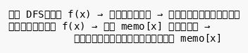
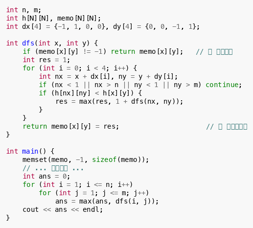
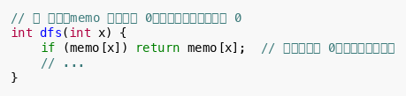
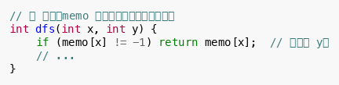
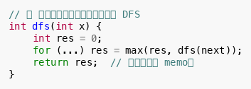

记忆化搜索（Memoization）是 DFS + 动态规划 的结合体。它用 DFS 的思维方式描述状态转移，同时用数组"记忆"已经计算过的结果，避免重复计算。
💡 如果你发现用 DFS 写递归公式很自然，但直接递推很别扭——记忆化搜索就是你的最佳选择。
核心思想

三要素：
1. 状态定义：用参数描述子问题（如 dfs(x, y) 表示从 出发的结果）
2. 记忆数组：
memo[state] 保存已计算的结果
3. 递归转移：与 DP 方程相同，只是写法是递归形式
经典例题：滑雪
给定高度矩阵，求最长递减路径的长度。
状态定义： dfs(x, y) = 从 出发能滑的最长距离
转移方程：

记忆化搜索 vs 递推 DP
| 特性 | 记忆化搜索 | 递推 DP |
|---|---|---|
| 代码风格 | 递归，自然描述状态转移 | 循环，按顺序填表 |
| 状态遍历顺序 | 按需计算（懒加载） | 必须确定拓扑序 |
| 适用场景 | 状态转移方向不固定、拓扑序不明显 | 状态转移方向固定、拓扑序明确 |
| 空间开销 | 相同 | 相同 |
| 时间开销 | 相同（每个状态只算一次） | 相同 |
选择建议：
- 如果状态转移有自然的递归结构（如树、图上的 DP）→ 记忆化搜索
- 如果状态有明显的阶段顺序（如背包的容量从小到大）→ 递推 DP
常见错误
错误 1：忘记初始化记忆数组

正确做法： 用 -1 或一个特殊标记值初始化。
错误 2：状态参数遗漏

错误 3：与普通 DFS 混淆
